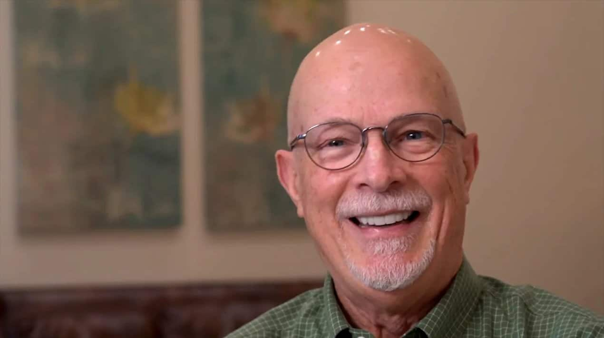
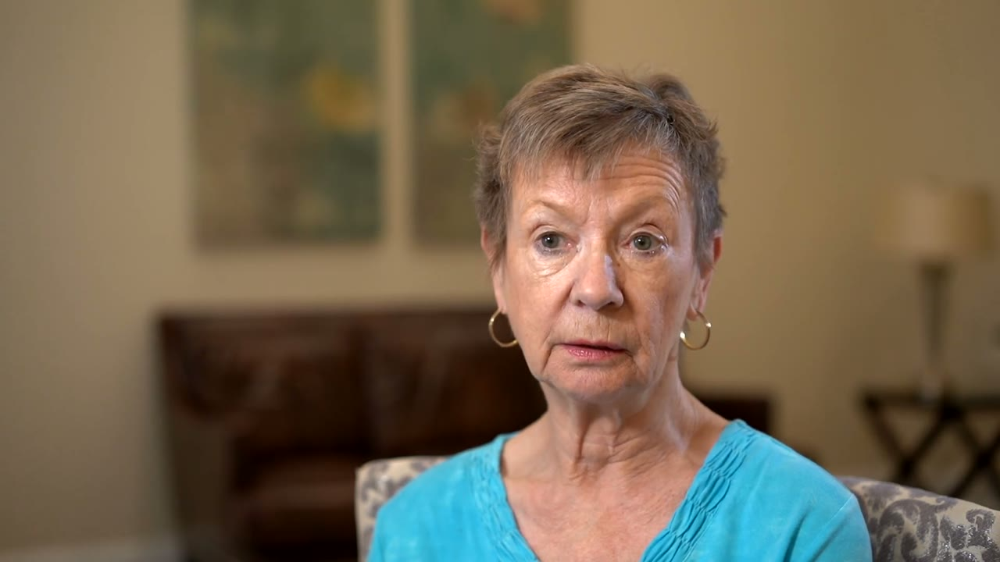
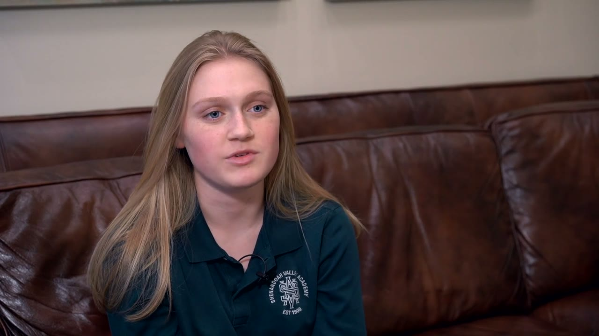
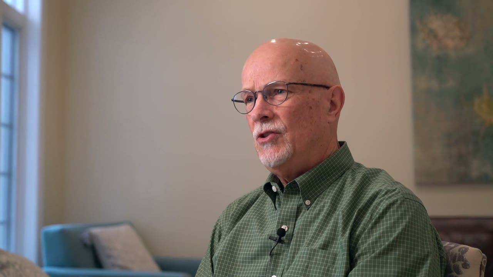
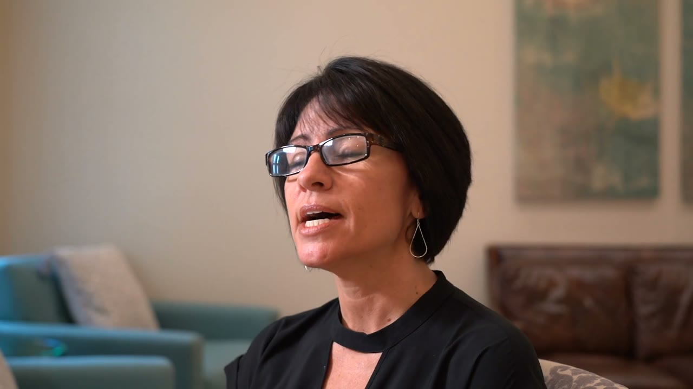
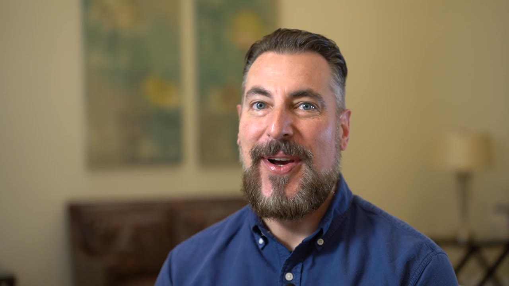
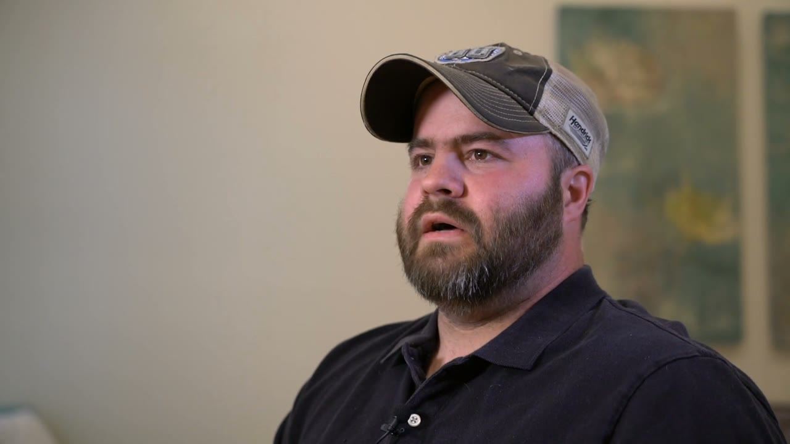

Spencer walked the team through the build, the old live site, and the two model sites. Then he drew clear lines around what was working and what was not. We did not treat that as a list of opinions. We treated it as the acceptance test for the whole rebuild. This report shows what he asked for, the standard we built to, and where each note landed.
"There's a lot of good foundation here, but we need attention to detail."
Spencer Walker, July 10 review callThe whole review came back to a single governing principle. Spencer said it plainly, and everything else in the call was really just that principle applied section by section.
I want every page to be a landing page. UVP, an emotional connection image, a call to action, a lower-threshold call to action above the fold, and then social proof: emotional connection and logical proof.
Spencer Walker · 00:03:53He also named the selling sequence he wants running down each page: the pain of where the patient is now, the possibility of what their life could look like, and the path, which is Dr. Burns' solution. His read on the old site was blunt. It's "all verbiage, education only, no pain, no possibilities. It would never convert." That's the gap the rebuild closes. Not more information. A reason to act.
Name where the patient is right now, hiding their smile, avoiding photos, soft foods only. Two or three sentences, not a lecture.
Show what life looks like after, with real images and short copy. This is the emotional connection he keeps pointing to.
Dr. Burns' process in a few simple steps. Education still lives here, but compressed and in service of the decision.
During the call, every section Spencer loved traced back to the same source. He said it himself, pointing at the screen.
All these spots where I'm like, oh, I love this, I love this, are things that Bobby actually created. She designed and handed over and the team just replicated.
Spencer Walker, on the strongest sections of the buildSo the build standard writes that in as law. Before any page ships it has to pass two questions: is it pretty, and is it persuasive. "Pretty" is defined against Bobby's original work, not against taste. If a new section can't sit next to her hero and her clean content blocks and look like the same designer made it, it isn't done. These three are the reference every page is measured against.
The emotional doctor-and-patient image, the outcome headline, the warm and aspirational tone. Spencer's words: "look how you can connect with this doctor and this patient. That's a beautiful smile. I want that."
The spacing, the type hierarchy, the restraint. "This looks nice and professional, clean. Look at how quality that looks." This is the yardstick for whether any section is finished.
The bio block at the bottom of every page, because the people closest to booking surgery check the doctor first. Labeled "Meet the Doctor," never "specialist," because the board won't allow it and Dr. Burns is a general dentist.
The test, in one line: a stranger in pain lands on the page and feels pulled to act, and the page looks like Bobby built it. If either answer is no, the page goes back.
These are grounded in the call itself, timestamped to the moment Spencer raised them. Left column is his note. Right column is what the rebuild does about it.
Pulled off the old site, degraded and washed out. "I couldn't show Dr. Burns this."
The standard now bans screenshots outright and requires the real logo file at full resolution. The actual J. Burns logo and its reverse for dark sections are staged in the asset library and wired into the proven reference page's header and footer.
"Smaller trademark, or remove it."
DreamSmile™ now renders with a small superscript mark, so it reads as a trademark and not a headline element. The verification harness checks for the small entity-rendered mark, and the built pages pass.
The shared DreamSmile mark never made it onto the page.
The real DreamSmile logo is in the library and scoped to implant pages only per the page map. It goes into the homepage "Introducing The DreamSmile" lockup on the homepage rebuild pass.
A grid of smiling strangers instead of real patients.
Every face is now a real patient from the practice's own content library, including the 2026 patient shoot. The harness bans stock and placeholder filenames, so a generic image can't slip back in.
None on the build.
Honest answer: we can't invent these. No signed-release before-and-afters exist in the library yet. They're the first item on the asset-gap list in section 06, for Dr. Burns to supply.
The section turns white on scroll down and loses its background on the way up.
That bug lived in the old Playground build. The new pages are rebuilt from scratch with one sticky header that keeps a stable white background at every scroll position. It doesn't flip.
The "Band-Aid" grid: oversized bullets, too much space, weak next to Bobby's sections.
The oversized bullets are replaced by the Figma treatment: a tight six-card grid, "You Deserve Better Than Another Band-Aid Solution," with a teal call to action. It lands on the homepage rebuild pass.
"Schedule a free consultation" alone is like meeting the parents on the first date.
A candidate quiz and a pricing-and-information guide now peek up over the hero, the Nuvia pattern Spencer pointed to. Nobody has to call anyone to take the next step. The harness confirms the peek row is present.
Add a Google reviews widget, or at least "five-star rated on Google." Every page.
A Google 5.0 badge and filmed testimonial cards now appear on every built page, with "rated 5.0 by patients on Google" surfaced near the top, not buried.
Service headers in different fonts and colors, reiterated links, "the AI did something wonky."
One type system site-wide, Montserrat with Amiri for display, and one teal palette from a single set of brand tokens. Every page draws from the same file, so headers can't drift apart. The harness confirms it.
"It's cut off, something's weird."
The ad-hoc edits that produced the broken element are gone. Every section now comes from one of three template skeletons, so there's no hand-mangled markup left to break on the page.
Meet-the-doctor is one of the most visited pages before surgery.
The Meet the Doctor block now sits at the foot of every service page, 22 of the built pages carry it, matching Bobby's pattern and the Figma order.
Dr. Burns is a general dentist. The board won't allow the term.
Zero pages use the word. The section is called "Meet the Doctor," and the harness fails any page that reintroduces "specialist."
The same bio on every page reads as duplicate content to Google.
Each page gets its own bio variation, on the way to 15 to 30 distinct versions. The harness runs a text-overlap check so no two bios ship identical.
DreamSmile is a smile made with dental implants. It shouldn't be on every page.
The page map carries a DreamSmile flag per page. The branding and logo appear only where that flag is Yes, on implant-related pages, and the harness enforces it.
Mandatory: quiz at the top, guide at the bottom.
The proven implant page opens with the candidate quiz and closes with the pricing-and-information guide. Both offers, top and bottom, on every implant page.
Spencer's line was "these aren't his people." Now they are. Every image and video on the rebuild comes from the practice's own content library. No stock, no AI faces.





Real patients from the 2026 shoot, the team, and the office itself, all from the shared content library.
The "Real Results. Real Patients." section runs on real interviews, filmed at the practice, not written by us. These are the posters from the six patient films now in the library.






Dr. Burns introducing himself, plus films on dental implants, crowns and bridges, and a practice overview. This is the video for the authority section.
An office tour and a homepage banner montage, the exterior, the operatory with its mountain view, the lounge and fireplace, and the 2026 team photo.
Only the confirmed Dr. Burns headshot is used. Two mislabeled files in the source library are flagged and kept off every page so the wrong face never appears.
The practice's branded before-and-after and question-and-answer videos are available for the testimonial sections, using the on-brand teal covers, not the off-brand batch.
Jed raised it on the call and Spencer agreed: you can change the content, but change the structure and you kill the rankings. The rebuild is built around that. New pages, same addresses, and the machine-readable markup that modern search and answer engines look for.
Every page keeps its exact live URL, trailing slash and all. A page like /restorative-dentistry/dental-implants/ gets a new look and better copy, but the same address. Blog posts stay at their flat root slugs, not tucked under a new folder. That's what protects years of accumulated ranking through a full visual rebuild.
Spencer asked for one thing to bring to the Friday call: an explicit list of what's missing, specific enough to act on without a back-and-forth. Here it is, down to two items.
This is the one thing the whole "possibility" story leans on, and it's the one thing we can't source. There are no signed-release before-and-afters in the shared drive. We won't fake them and we won't use anyone else's cases.
What we need from Dr. Burns, page by page:
Spencer is asking Dr. Burns for these at the standing Friday call. The moment they land, they go straight into the pages that are already built to hold them.
This is the single biggest risk in the migration, and it's a business call, not a design one. There are two live, indexed cosmetic-dentistry trees on the site right now, each with five child pages.
/cosmetic-dentistry/, with New Market titles./cosmetic-dentistry-4/, with Harrisonburg titles, the one the menu links to today.We can't silently drop either one. Dropping the "-4" tree 404s five pages that rank today. Dropping the clean tree 404s the other five. The call we need: keep both, or fold one into the other and redirect it. Once Dr. Burns and Spencer choose, we set the redirects and build accordingly.
Every note from July 10 is either fixed, specified for the next pass, or waiting on the two items above. Nothing was waved off. The proven implant page shows the standard in full, and the rest of the site is built to match it.